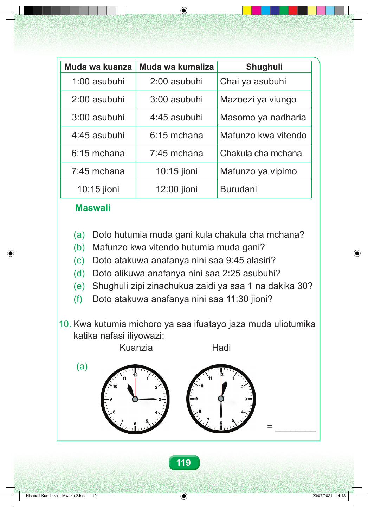

Muda wa kuanza Muda wa kumaliza Shughuli 1:00 asubuhi 2:00 asubuhi Chai ya asubuhi 2:00 asubuhi 3:00 asubuhi Mazoezi ya viungo 3:00 asubuhi 4:45 asubuhi Masomo ya nadharia 4:45 asubuhi 6:15 mchana Mafunzo kwa vitendo 6:15 mchana 7:45 mchana Chakula cha mchana 7:45 mchana 10:15 jioni Mafunzo ya vipimo 10:15 jioni 12:00 jioni Burudani Maswali (a) Doto hutumia muda gani kula chakula cha mchana? (b) Mafunzo kwa vitendo hutumia muda gani? (c) Doto atakuwa anafanya nini saa 9:45 alasiri? (d) Doto alikuwa anafanya nini saa 2:25 asubuhi? (e) Shughuli zipi zinachukua zaidi ya saa 1 na dakika 30? (f) Doto atakuwa anafanya nini saa 11:30 jioni? 10. Kwa kutumia michoro ya saa ifuatayo jaza muda uliotumika katika nafasi iliyowazi: Kuanzia Hadi (a) = ________ 119 Hisabati Kundirika 1 Mwaka 2.indd 119 23/07/2021 14:43